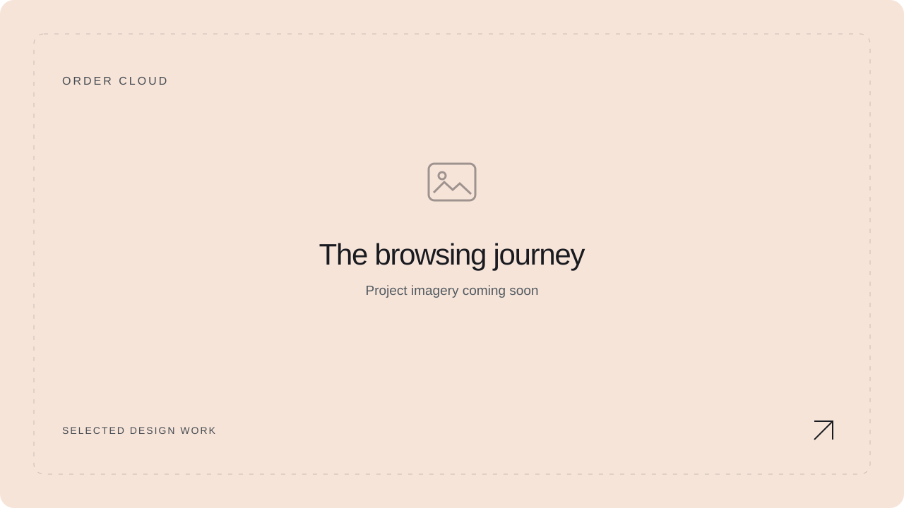
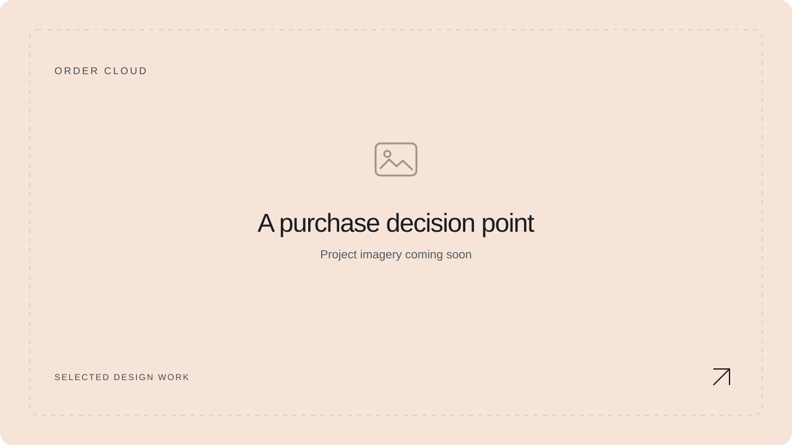

01 / Context & problem
The question behind the design.
Order Cloud is a shopping-website project. Its portfolio story can focus on how the interface presents products, supports a purchase decision and makes the next action understandable.
How can the shopping experience give people enough information to decide, while keeping browsing and purchase-related actions easy to follow?
02 / Contribution
My role & scope.
UX/UI designer for the shopping website.
- Shopping website design
- Product presentation
- Commerce interface exploration
03 / Approach
How I’d work through it.
- 01
Understand the buying decision
Identify what a shopper needs to know before moving forward, such as the product’s purpose, relevant details and the information that could create uncertainty.
- 02
Connect the browsing journey
Review how people move between a listing and an individual product. Keep the structure and labels consistent so returning to browse feels predictable.
- 03
Review decision points on smaller screens
Check whether product information and the primary action remain understandable when the layout has less space.

04 / Decisions & rationale
A few things I’d want to verify.
Give the product information a deliberate order
Place the information needed for an initial decision early, and organise supporting detail so it remains easy to find.
The trade-off: Showing everything at once can overwhelm a page; hiding important details can make the purchase feel uncertain.
Make the main action easy to recognise
Use a clear hierarchy between the primary buying action and secondary actions such as continuing to browse.
The trade-off: A prominent button cannot compensate for missing product information. Clarity needs to come before pressure.
Keep commerce feedback understandable
Where the design includes purchase-related actions, explain what changed and what the shopper can do next.
The trade-off: Too many messages can interrupt browsing. Feedback should be proportionate to the importance of the action.

05 / Challenges & limitations
What still needs to be checked.
Uncertainty before commitment
Check whether relevant product, price and fulfilment information is available at the point a shopper needs it. Include only the flows and policies actually covered by the project.
Long content on a small screen
Consider how product descriptions, options and actions behave when stacked vertically. A useful hierarchy should survive the responsive layout.
Design scope versus implementation
Specify which parts of the buying journey were designed and which were implemented. Avoid claiming a completed checkout or conversion improvement without supporting evidence.
06 / Reflection
What I took from it.
A shopping experience builds confidence through clear information and predictable actions. The strongest screenshots will show those decisions in the moments where a shopper could hesitate.
What I would evaluate next
A useful next test would ask someone to find an appropriate product, explain what they understand about it and identify how to proceed. Use the actual purchase flow only if it is part of the project.
No measured business or usability outcome is claimed in this case study.